Linear algebra routines¶
This is a general purpose linear algebra module, extending the Fortran intrinsics This module defines dot products between matrices and vectors, wrappers to textsc{lapack} for matrix diagonalisation and inversion, as well as array searching, sorting and averaging.
Module contents for quippy.linearalgebra:
Functions
arrays_lt(i,j,[error]) |
compare contents of 2 cells in up to N=2 arrays (int or real), return true if | ||
fit_cubic(x0,y0,y0p,x1,y1,y1p) |
Fit a cubic polynomial to a function given its values (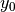 and 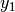) and | ||
kmeans(data,k,means,assign,[err,initialisation]) |
K-means clustering. | ||
round_prime_factors(n,[max_prime_factor,error]) |
round n to the nearest number greater or equal to n | ||
random_unit_vector() |
Returns a random unit vector which is uniformly distributed over the unit sphere [See Knop, CACM 13 326 (1970)]. | ||
int_array_gt(array1,array2) |
|
||
trapezoidintegral(x,y) |
Calculates integral numerically using the trapezoid formula from (x,y) data pairs. | ||
is_in_array(val) |
Test if a given integer val is in an integer array array. |
||
int_array_ge(array1,array2) |
|
||
linear_interpolate(x0,y0,x1,y1,x) |
Linearly interpolate between the points 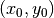 and 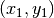. | ||
cubic_interpolate(x0,y0,x1,y1,x) |
Perform a cubic interpolation between the points and , using the cubic function with zero first derivative at  and and  . . |
||
oscillate(m) |
:math:` (-1)^n ` function. | ||
permutation_symbol() |
|
||
factorial(n) |
Factorial, real result | ||
pbc_aware_centre(p,lattice,g) |
|
||
ran_normal3() |
Return a three vector with normally distributed components | ||
integerdigits(base,n0,[error]) |
|
||
binom(n,r) |
Binomial coefficient, real result | ||
int_array_lt(array1,array2) |
|
||
is_diagonal(matrix) |
Test if this matrix is diagonal | ||
factorial2(n) |
Double factorial, real result | ||
zero_sum(array) |
Subtract the average value from each element of a real array. | ||
unit_vector(theta,phi) |
Return a unit vector in the direction given by the angles theta and phi, i.e. |
||
d3poly_switch(r,cutoff_in,transition_width) |
|
||
poly_switch(r,cutoff_in,transition_width) |
|
||
symmetric_linear_solve(m,a,n3) |
|
||
dcos_cutoff_function(r,cutoff_in) |
|
||
inverse_svd_threshold(...) |
|
||
cos_cutoff_function(r,cutoff_in) |
|
||
angle(a,b) |
Return the (smallest) angle between two vectors, in radians. | ||
dpoly_switch(r,cutoff_in,transition_width) |
|
||
d2poly_switch(r,cutoff_in,transition_width) |
|
||
svdfact(in_matrix,n2,n3,n4,n5,n6) |
|
||
factorial_int(n) |
Factorial, integer result | ||
matrix3x3_inverse(matrix) |
Calculate  matrix inverse of matrix inverse of lattice and store result in g. |
||
matrix3x3_det(m) |
Calulates determinant of matrix |
||
fill_random_integer(n,n0,[b]) |
|
||
pseudo_inverse(n2,n3,[error]) |
|
||
scalar_triple_product(x,y,z) |
Return the scalar triple product 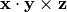 of the 3-vectors x, y and z. |
||
invsqrt_real_array1d(x) |
|
||
frobenius_norm(*args, **kwargs) |
|
||
binary_search(*args, **kwargs) |
Routine is wrapper around Fortran interface binary_search containing multiple routines: |
||
update_exponential_average(*args, **kwargs) |
Update a measure of a recent average by decaying its current value and adding on a new sample | ||
is_square(*args, **kwargs) |
Test if matrix is square | ||
sign(*args, **kwargs) |
Routine is wrapper around Fortran interface sign containing multiple routines: |
||
dcoordination_function(*args, **kwargs) |
Routine is wrapper around Fortran interface dcoordination_function containing multiple routines: |
||
uniq(*args, **kwargs) |
Routine is wrapper around Fortran interface uniq containing multiple routines: |
||
find(*args, **kwargs) |
Routine is wrapper around Fortran interface find containing multiple routines: |
||
matrix_product_vect_asdiagonal_sub(*args, ...) |
Matrix product with the diagonal matrix constructed from a vector in subroutine form, | ||
normsq(*args, **kwargs) |
Euclidean norm$^2$ of a vector or a of a list of vectors. | ||
inverse(*args, **kwargs) |
Calculate the inverse of a matrix in-place. | ||
trace(*args, **kwargs) |
Return the trace of a matrix. | ||
randomise(*args, **kwargs) |
Randomise the elements of an array. | ||
diag(*args, **kwargs) |
Construct a diagonal matrix from a vector, or extract the diagonal elements of a matrix and return them as a vector. | ||
matrix_product_sub(*args, **kwargs) |
Overloaded multiplication for matrix $times$ matrix in subroutine form, | ||
matrix_exp(*args, **kwargs) |
Routine is wrapper around Fortran interface matrix_exp containing multiple routines: |
||
matrix_mvmt(*args, **kwargs) |
Matrix product of matrix and a vector in the form: | ||
d2coordination_function(*args, **kwargs) |
Routine is wrapper around Fortran interface d2coordination_function containing multiple routines: |
||
add_identity(*args, **kwargs) |
Adds the identity to a matrix | ||
is_symmetric(*args, **kwargs) |
Test for matrix symmetry (with floating point equality test ‘.feq.’ as described above). | ||
histogram(*args, **kwargs) |
Returns a vector, contining a histogram of frequencies. | ||
symmetrise(*args, **kwargs) |
Symmetrise a matrix: $$A to frac{A + A^T}{2}$$ | ||
nonsymmetric_diagonalise(*args, **kwargs) |
Routine is wrapper around Fortran interface nonsymmetric_diagonalise containing multiple routines: |
||
insertion_sort(*args, **kwargs) |
Routine is wrapper around Fortran interface insertion_sort containing multiple routines: |
||
find_in_array(*args, **kwargs) |
Search an array by element or by row. | ||
coordination_function(*args, **kwargs) |
Routine is wrapper around Fortran interface coordination_function containing multiple routines: |
||
matrix_product_vect_asdiagonal_rl_sub(*args, ...) |
Routine is wrapper around Fortran interface matrix_product_vect_asdiagonal_rl_sub containing multiple routines: |
||
sort_array(*args, **kwargs) |
Routine is wrapper around Fortran interface sort_array containing multiple routines: |
||
diagonalise(*args, **kwargs) |
Overloaded interfaces to textsc{lapack} matrix diagonlisation functions for real and complex matrices. | ||
rms_diff(*args, **kwargs) |
Root-mean-square difference calculation for components of two vectors or arrays. | ||
trace_mult(*args, **kwargs) |
Routine is wrapper around Fortran interface trace_mult containing multiple routines: |
||
norm(*args, **kwargs) |
Return the euclidean norm of a vector or of an array. | ||
heap_sort(*args, **kwargs) |
Routine is wrapper around Fortran interface heap_sort containing multiple routines: |
||
d3coordination_function(*args, **kwargs) |
Routine is wrapper around Fortran interface d3coordination_function containing multiple routines: |
||
is_orthogonal(*args, **kwargs) |
Test is matrix is unitary i.e. | ||
check_size(*args, **kwargs) |
Overloaded interface to assert that the size of an array is correct. |
Attributes
| Name | Value |
|---|---|
NOT_FACTORISED |
0 |
QR |
2 |
CHOLESKY |
1 |
factorial_table |
— |
-
quippy.linearalgebra.arrays_lt(i, j[, error])¶ compare contents of 2 cells in up to N=2 arrays (int or real), return true if contents in first cell is less than 2nd, with 1st array taking precendence.
Parameters: i : input int
j : input int
error : in/output rank-0 array(int,’i’), optional
Returns: ret_arrays_lt : int
References
Routine is wrapper around Fortran routine
arrays_ltdefined in file src/libAtoms/linearalgebra.f95.
-
quippy.linearalgebra.fit_cubic(x0, y0, y0p, x1, y1, y1p)¶ Fit a cubic polynomial to a function given its values ( and ) and its derivative (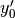 and 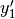) at two points (
and )y = ax^3 + bx^2 + cx + d
Parameters: x0 : input float
, , y0 : input float
, , y0p : input float
, , x1 : input float
, , y1 : input float
, , y1p : input float
, , Returns: coeffs : rank-1 array(‘d’) with bounds (4)
(/a,b,c,d/)References
Routine is wrapper around Fortran routine
fit_cubicdefined in file src/libAtoms/linearalgebra.f95.
-
quippy.linearalgebra.kmeans(data, k, means, assign[, err, initialisation])¶ K-means clustering. Algorithm is as described in Numerical Recipes (Third Edition, Section 16.1.2, pp. 848-849).
Parameters: data : input rank-2 array(‘d’) with bounds (qp_n0,qp_n1)
k : input int
means : in/output rank-2 array(‘d’) with bounds (qp_n2,qp_n3)
assign : in/output rank-1 array(‘i’) with bounds (qp_n4)
err : in/output rank-0 array(float,’d’), optional
initialisation : input string(len=-1), optional
References
Routine is wrapper around Fortran routine
kmeansdefined in file src/libAtoms/linearalgebra.f95.
-
quippy.linearalgebra.round_prime_factors(n[, max_prime_factor, error])¶ round n to the nearest number greater or equal to n with prime factors of only 2, 3, 5, ... max_prime_factor
Parameters: n : in/output rank-0 array(int,’i’)
The number to be rounded
max_prime_factor : input int, optional
error : in/output rank-0 array(int,’i’), optional
References
Routine is wrapper around Fortran routine
round_prime_factorsdefined in file src/libAtoms/linearalgebra.f95.
-
quippy.linearalgebra.random_unit_vector()¶ Returns a random unit vector which is uniformly distributed over the unit sphere [See Knop, CACM 13 326 (1970)].
Returns: ret_v : rank-1 array(‘d’) with bounds (3) References
Routine is wrapper around Fortran routine
random_unit_vectordefined in file src/libAtoms/linearalgebra.f95.
-
quippy.linearalgebra.int_array_gt(array1, array2)¶ Parameters: array1 : input rank-1 array(‘i’) with bounds (qp_n0)
array2 : input rank-1 array(‘i’) with bounds (size(qp_array1))
Returns: ret_gt : int
References
Routine is wrapper around Fortran routine
int_array_gtdefined in file src/libAtoms/linearalgebra.f95.
-
quippy.linearalgebra.trapezoidintegral(x, y)¶ Calculates integral numerically using the trapezoid formula from (x,y) data pairs.
Parameters: x : input rank-1 array(‘d’) with bounds (qp_n0)
y : input rank-1 array(‘d’) with bounds (qp_n1)
Returns: ret_trapezoidintegral : float
References
Routine is wrapper around Fortran routine
trapezoidintegraldefined in file src/libAtoms/linearalgebra.f95.
-
quippy.linearalgebra.is_in_array(val)¶ Test if a given integer
valis in an integer arrayarray.Parameters: val : input int Returns: ret_is_in_array : int References
Routine is wrapper around Fortran routine
is_in_arraydefined in file src/libAtoms/linearalgebra.f95.
-
quippy.linearalgebra.int_array_ge(array1, array2)¶ Parameters: array1 : input rank-1 array(‘i’) with bounds (qp_n0)
array2 : input rank-1 array(‘i’) with bounds (size(qp_array1))
Returns: ret_ge : int
References
Routine is wrapper around Fortran routine
int_array_gedefined in file src/libAtoms/linearalgebra.f95.
-
quippy.linearalgebra.linear_interpolate(x0, y0, x1, y1, x)¶ Linearly interpolate between the points and . Returns the interpolated
 at position
at position  , where 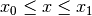.
, where 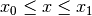.Parameters: x0 : input float
y0 : input float
x1 : input float
y1 : input float
x : input float
Returns: ret_y : float
References
Routine is wrapper around Fortran routine
linear_interpolatedefined in file src/libAtoms/linearalgebra.f95.
-
quippy.linearalgebra.cubic_interpolate(x0, y0, x1, y1, x)¶ Perform a cubic interpolation between the points and , using the cubic function with zero first derivative at
and .
Returns the interpolated at position , where .Parameters: x0 : input float
y0 : input float
x1 : input float
y1 : input float
x : input float
Returns: ret_y : float
References
Routine is wrapper around Fortran routine
cubic_interpolatedefined in file src/libAtoms/linearalgebra.f95.
-
quippy.linearalgebra.oscillate(m)¶ :math:` (-1)^n ` function.
Parameters: m : input int Returns: ret_oscillate : int References
Routine is wrapper around Fortran routine
oscillatedefined in file src/libAtoms/linearalgebra.f95.
-
quippy.linearalgebra.permutation_symbol()¶ Returns: ret_eps : rank-3 array(‘d’) with bounds (3,3,3) References
Routine is wrapper around Fortran routine
permutation_symboldefined in file src/libAtoms/linearalgebra.f95.
-
quippy.linearalgebra.factorial(n)¶ Factorial, real result
Parameters: n : input int Returns: ret_res : float References
Routine is wrapper around Fortran routine
factorialdefined in file src/libAtoms/linearalgebra.f95.
-
quippy.linearalgebra.pbc_aware_centre(p, lattice, g)¶ Parameters: p : input rank-2 array(‘d’) with bounds (qp_n0,qp_n1)
lattice : input rank-2 array(‘d’) with bounds (3,3)
g : input rank-2 array(‘d’) with bounds (3,3)
Returns: ret_c : rank-1 array(‘d’) with bounds (3)
References
Routine is wrapper around Fortran routine
pbc_aware_centredefined in file src/libAtoms/linearalgebra.f95.
-
quippy.linearalgebra.ran_normal3()¶ Return a three vector with normally distributed components
Returns: ret_ran_normal3 : rank-1 array(‘d’) with bounds (3) References
Routine is wrapper around Fortran routine
ran_normal3defined in file src/libAtoms/linearalgebra.f95.
-
quippy.linearalgebra.integerdigits(base, n0[, error])¶ Parameters: base : input int
n0 : input int
shape(qp_iDigits,0)
error : in/output rank-0 array(int,’i’), optional
Returns: idigits : rank-1 array(‘i’) with bounds (qp_n0)
References
Routine is wrapper around Fortran routine
integerdigitsdefined in file src/libAtoms/linearalgebra.f95.
-
quippy.linearalgebra.binom(n, r)¶ Binomial coefficient, real result
Parameters: n : input int
r : input int
Returns: ret_res : float
References
Routine is wrapper around Fortran routine
binomdefined in file src/libAtoms/linearalgebra.f95.
-
quippy.linearalgebra.int_array_lt(array1, array2)¶ Parameters: array1 : input rank-1 array(‘i’) with bounds (qp_n0)
array2 : input rank-1 array(‘i’) with bounds (size(qp_array1))
Returns: ret_lt : int
References
Routine is wrapper around Fortran routine
int_array_ltdefined in file src/libAtoms/linearalgebra.f95.
-
quippy.linearalgebra.is_diagonal(matrix)¶ Test if this matrix is diagonal
Parameters: matrix : input rank-2 array(‘d’) with bounds (qp_n0,qp_n1) Returns: ret_is_diagonal : int References
Routine is wrapper around Fortran routine
is_diagonaldefined in file src/libAtoms/linearalgebra.f95.
-
quippy.linearalgebra.factorial2(n)¶ Double factorial, real result
Parameters: n : input int Returns: ret_res : float References
Routine is wrapper around Fortran routine
factorial2defined in file src/libAtoms/linearalgebra.f95.
-
quippy.linearalgebra.zero_sum(array)¶ Subtract the average value from each element of a real array.
Parameters: array : in/output rank-2 array(‘d’) with bounds (qp_n0,qp_n1) References
Routine is wrapper around Fortran routine
zero_sumdefined in file src/libAtoms/linearalgebra.f95.
-
quippy.linearalgebra.unit_vector(theta, phi)¶ Return a unit vector in the direction given by the angles
thetaandphi, i.e. convert the spherical polar coordinates point 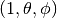 to cartesians.Parameters: theta : input float
phi : input float
Returns: ret_unit_vector : rank-1 array(‘d’) with bounds (3)
References
Routine is wrapper around Fortran routine
unit_vectordefined in file src/libAtoms/linearalgebra.f95.
-
quippy.linearalgebra.d3poly_switch(r, cutoff_in, transition_width)¶ Parameters: r : input float
cutoff_in : input float
transition_width : input float
Returns: ret_d3poly_switch : float
References
Routine is wrapper around Fortran routine
d3poly_switchdefined in file src/libAtoms/linearalgebra.f95.
-
quippy.linearalgebra.poly_switch(r, cutoff_in, transition_width)¶ Parameters: r : input float
cutoff_in : input float
transition_width : input float
Returns: ret_poly_switch : float
References
Routine is wrapper around Fortran routine
poly_switchdefined in file src/libAtoms/linearalgebra.f95.
-
quippy.linearalgebra.symmetric_linear_solve(m, a, n3)¶ Parameters: m : input rank-2 array(‘d’) with bounds (qp_n0,qp_n1)
a : input rank-1 array(‘d’) with bounds (qp_n2)
n3 : input int
shape(qp_M_inv_a,0)
Returns: m_inv_a : rank-1 array(‘d’) with bounds (qp_n3)
References
Routine is wrapper around Fortran routine
symmetric_linear_solvedefined in file src/libAtoms/linearalgebra.f95.
-
quippy.linearalgebra.dcos_cutoff_function(r, cutoff_in)¶ Parameters: r : input float
cutoff_in : input float
Returns: ret_dcos_cutoff_function : float
References
Routine is wrapper around Fortran routine
dcos_cutoff_functiondefined in file src/libAtoms/linearalgebra.f95.
-
quippy.linearalgebra.inverse_svd_threshold(in_matrix[, thresh, result_inv, u_out, vt_out])¶ Parameters: in_matrix : input rank-2 array(‘d’) with bounds (qp_n0,qp_n1)
thresh : input float, optional
result_inv : in/output rank-2 array(‘d’) with bounds (qp_n2,qp_n3), optional
u_out : in/output rank-2 array(‘d’) with bounds (qp_n4,qp_n5), optional
vt_out : in/output rank-2 array(‘d’) with bounds (qp_n6,qp_n7), optional
References
Routine is wrapper around Fortran routine
inverse_svd_thresholddefined in file src/libAtoms/linearalgebra.f95.
-
quippy.linearalgebra.cos_cutoff_function(r, cutoff_in)¶ Parameters: r : input float
cutoff_in : input float
Returns: ret_cos_cutoff_function : float
References
Routine is wrapper around Fortran routine
cos_cutoff_functiondefined in file src/libAtoms/linearalgebra.f95.
-
quippy.linearalgebra.angle(a, b)¶ Return the (smallest) angle between two vectors, in radians. This is calculated as
\arccos\left(\frac{\mathbf{a}\cdot\mathbf{b}}{|\mathbf{a}| |\mathbf{b}|}\right)
Parameters: a : input rank-1 array(‘d’) with bounds (qp_n0)
b : input rank-1 array(‘d’) with bounds (qp_n1)
Returns: ret_angle : float
References
Routine is wrapper around Fortran routine
angledefined in file src/libAtoms/linearalgebra.f95.
-
quippy.linearalgebra.dpoly_switch(r, cutoff_in, transition_width)¶ Parameters: r : input float
cutoff_in : input float
transition_width : input float
Returns: ret_dpoly_switch : float
References
Routine is wrapper around Fortran routine
dpoly_switchdefined in file src/libAtoms/linearalgebra.f95.
-
quippy.linearalgebra.d2poly_switch(r, cutoff_in, transition_width)¶ Parameters: r : input float
cutoff_in : input float
transition_width : input float
Returns: ret_d2poly_switch : float
References
Routine is wrapper around Fortran routine
d2poly_switchdefined in file src/libAtoms/linearalgebra.f95.
-
quippy.linearalgebra.svdfact(in_matrix, n2, n3, n4, n5, n6)¶ Parameters: in_matrix : input rank-2 array(‘d’) with bounds (qp_n0,qp_n1)
u_out : rank-2 array(‘d’) with bounds (qp_n2,qp_n3)
n2 : input int
shape(qp_u_out,0)
n3 : input int
shape(qp_u_out,1)
s_out : rank-1 array(‘d’) with bounds (qp_n4)
n4 : input int
shape(qp_s_out,0)
vt_out : rank-2 array(‘d’) with bounds (qp_n5,qp_n6)
n5 : input int
shape(qp_vt_out,0)
n6 : input int
shape(qp_vt_out,1)
References
Routine is wrapper around Fortran routine
svdfactdefined in file src/libAtoms/linearalgebra.f95.
-
quippy.linearalgebra.factorial_int(n)¶ Factorial, integer result
Parameters: n : input int Returns: ret_res : int References
Routine is wrapper around Fortran routine
factorial_intdefined in file src/libAtoms/linearalgebra.f95.
-
quippy.linearalgebra.matrix3x3_inverse(matrix)¶ Calculate
matrix inverse of latticeand store result ing. Avoids overhead of calling textsc{lapack} for simple case of matrix.Parameters: matrix : input rank-2 array(‘d’) with bounds (3,3) Returns: g : rank-2 array(‘d’) with bounds (3,3) References
Routine is wrapper around Fortran routine
matrix3x3_inversedefined in file src/libAtoms/linearalgebra.f95.
-
quippy.linearalgebra.matrix3x3_det(m)¶ Calulates determinant of
matrixParameters: m : input rank-2 array(‘d’) with bounds (3,3) Returns: ret_det : float References
Routine is wrapper around Fortran routine
matrix3x3_detdefined in file src/libAtoms/linearalgebra.f95.
-
quippy.linearalgebra.fill_random_integer(n, n0[, b])¶ Parameters: n0 : input int
shape(qp_r,0)
n : input int
b : input rank-1 array(‘i’) with bounds (qp_n1), optional
Returns: r : rank-1 array(‘i’) with bounds (qp_n0)
References
Routine is wrapper around Fortran routine
fill_random_integerdefined in file src/libAtoms/linearalgebra.f95.
-
quippy.linearalgebra.pseudo_inverse(n2, n3[, error])¶ Parameters: n2 : input int
shape(qp_inverse,0)
n3 : input int
shape(qp_inverse,1)
error : in/output rank-0 array(int,’i’), optional
Returns: inverse : rank-2 array(‘d’) with bounds (qp_n2,qp_n3)
References
Routine is wrapper around Fortran routine
pseudo_inversedefined in file src/libAtoms/linearalgebra.f95.
-
quippy.linearalgebra.scalar_triple_product(x, y, z)¶ Return the scalar triple product of the 3-vectors
x,yandz.Parameters: x : input rank-1 array(‘d’) with bounds (3)
y : input rank-1 array(‘d’) with bounds (3)
z : input rank-1 array(‘d’) with bounds (3)
Returns: ret_scalar_triple_product : float
References
Routine is wrapper around Fortran routine
scalar_triple_productdefined in file src/libAtoms/linearalgebra.f95.
-
quippy.linearalgebra.invsqrt_real_array1d(x)¶ Parameters: x : input rank-1 array(‘d’) with bounds (qp_n0) Returns: ret_invsqrt_real_array1d : rank-1 array(‘d’) with bounds (size(qp_x)) References
Routine is wrapper around Fortran routine
invsqrt_real_array1ddefined in file src/libAtoms/linearalgebra.f95.
-
quippy.linearalgebra.frobenius_norm(*args, **kwargs)¶ Returns: ret_norm : float References
Routine is wrapper around Fortran routine
frobenius_normdefined in file src/libAtoms/linearalgebra.f95.
-
quippy.linearalgebra.binary_search(*args, **kwargs)¶ Routine is wrapper around Fortran interface
binary_searchcontaining multiple routines:-
quippy.linearalgebra.binary_search(array, value[, first, low, high, error]) Do binary search and return
indexof element containingvalue, or zero if not found.arraymust be sorted into ascending order beforehand. If the array subscripts don``t start at 1, then pass the actual index of the first element asfirst', then, if the element isn``t found, the value returned is ``first' minus 1. To restrict the search to a subsection of the array supply ``lowand/orhigh.Parameters: - array (input rank-1 array('i') with bounds (qp_n0)) –
- value (input int) –
- first (input int, optional) –
- low (input int, optional) –
- high (input int, optional) –
- error (in/output rank-0 array(int,'i'), optional) –
Returns: ret_index – int
Routine is wrapper around Fortran routine
binary_search_idefined in file src/libAtoms/linearalgebra.f95.
-
quippy.linearalgebra.binary_search(array, value[, first, low, high, error]) Do binary search and return
indexof element being smaller or equal tovalue.arraymust be sorted into ascending order beforehand. If the array subscripts don’t start at 1, then pass the actual index of the first element asfirstParameters: - array (input rank-1 array('d') with bounds (qp_n0)) –
- value (input float) –
- first (input int, optional) –
- low (input int, optional) –
- high (input int, optional) –
- error (in/output rank-0 array(int,'i'), optional) –
Returns: ret_index – int
Routine is wrapper around Fortran routine
binary_search_rdefined in file src/libAtoms/linearalgebra.f95.
-
-
quippy.linearalgebra.update_exponential_average(*args, **kwargs)¶ Update a measure of a recent average by decaying its current value and adding on a new sample
Routine is wrapper around Fortran interface
update_exponential_averagecontaining multiple routines:-
quippy.linearalgebra.update_exponential_average(average, decay, x) Parameters: - average (in/output rank-0 array(float,'d')) –
- decay (input float) –
- x (input float) –
Routine is wrapper around Fortran routine
update_exponential_average_sdefined in file src/libAtoms/linearalgebra.f95.
-
quippy.linearalgebra.update_exponential_average(average, decay, x) Parameters: - average (in/output rank-1 array('d') with bounds (qp_n0)) –
- decay (input float) –
- x (input rank-1 array('d') with bounds (size(qp_average))) –
Routine is wrapper around Fortran routine
update_exponential_average_vdefined in file src/libAtoms/linearalgebra.f95.
-
quippy.linearalgebra.update_exponential_average(average, decay, x) Parameters: - average (in/output rank-2 array('d') with bounds (qp_n0,qp_n1)) –
- decay (input float) –
- x (input rank-2 array('d') with bounds (qp_n2,qp_n3)) –
Routine is wrapper around Fortran routine
update_exponential_average_d2defined in file src/libAtoms/linearalgebra.f95.
-
-
quippy.linearalgebra.is_square(*args, **kwargs)¶ Test if matrix is square
Routine is wrapper around Fortran interface
is_squarecontaining multiple routines:-
quippy.linearalgebra.is_square(matrix) Parameters: matrix (input rank-2 array('d') with bounds (qp_n0,qp_n1)) – Returns: ret_sq – int Routine is wrapper around Fortran routine
matrix_squaredefined in file src/libAtoms/linearalgebra.f95.
-
quippy.linearalgebra.is_square(matrix) Parameters: matrix (input rank-2 array('i') with bounds (qp_n0,qp_n1)) – Returns: ret_sq – int Routine is wrapper around Fortran routine
int_matrix_squaredefined in file src/libAtoms/linearalgebra.f95.
-
quippy.linearalgebra.is_square(matrix_z) Parameters: matrix_z (input rank-2 array('D') with bounds (qp_n0,qp_n1)) – Returns: ret_sq – int Routine is wrapper around Fortran routine
matrix_z_squaredefined in file src/libAtoms/linearalgebra.f95.
-
quippy.linearalgebra.is_square(matrix) Parameters: matrix (input rank-2 array('i') with bounds (qp_n0,qp_n1)) – Returns: ret_sq – int Routine is wrapper around Fortran routine
logical_matrix_squaredefined in file src/libAtoms/linearalgebra.f95.
-
-
quippy.linearalgebra.sign(*args, **kwargs)¶ Routine is wrapper around Fortran interface
signcontaining multiple routines:-
quippy.linearalgebra.sign(n) Parameters: n (input int) – Returns: ret_int_sign – int Routine is wrapper around Fortran routine
int_signdefined in file src/libAtoms/linearalgebra.f95.
-
quippy.linearalgebra.sign(n) Parameters: n (input float) – Returns: ret_real_sign – float Routine is wrapper around Fortran routine
real_signdefined in file src/libAtoms/linearalgebra.f95.
-
-
quippy.linearalgebra.dcoordination_function(*args, **kwargs)¶ Routine is wrapper around Fortran interface
dcoordination_functioncontaining multiple routines:-
quippy.linearalgebra.dcoordination_function(r, lower_cutoff_in, lower_transition_width, upper_cutoff_in, upper_transition_width) Parameters: - r (input float) –
- lower_cutoff_in (input float) –
- lower_transition_width (input float) –
- upper_cutoff_in (input float) –
- upper_transition_width (input float) –
Returns: ret_dcoordination_function_lower_upper – float
Routine is wrapper around Fortran routine
dcoordination_function_lower_upperdefined in file src/libAtoms/linearalgebra.f95.
-
quippy.linearalgebra.dcoordination_function(r, cutoff_in, transition_width) Parameters: - r (input float) –
- cutoff_in (input float) –
- transition_width (input float) –
Returns: ret_dcoordination_function_upper – float
Routine is wrapper around Fortran routine
dcoordination_function_upperdefined in file src/libAtoms/linearalgebra.f95.
-
-
quippy.linearalgebra.uniq(*args, **kwargs)¶ Routine is wrapper around Fortran interface
uniqcontaining multiple routines:-
quippy.linearalgebra.uniq(array[, unique]) Parameters: - array (input rank-2 array('d') with bounds (qp_n0,qp_n1)) –
- unique (in/output rank-1 array('i') with bounds (qp_n2), optional) –
Routine is wrapper around Fortran routine
uniq_real_dim2defined in file src/libAtoms/linearalgebra.f95.
-
-
quippy.linearalgebra.find(*args, **kwargs)¶ Routine is wrapper around Fortran interface
findcontaining multiple routines:-
quippy.linearalgebra.find(mask, n1) Collect the indices corresponding to .true. elements of a mask can be used to index other arrays, e.g. array(find(mask))
Parameters: - mask (input rank-1 array('i') with bounds (qp_n0)) –
- n1 (input int) – shape(qp_ret_find_indices,0)
Returns: ret_find_indices – rank-1 array(‘i’) with bounds (qp_n1)
Routine is wrapper around Fortran routine
find_indicesdefined in file src/libAtoms/linearalgebra.f95.
-
-
quippy.linearalgebra.matrix_product_vect_asdiagonal_sub(*args, **kwargs)¶ Matrix product with the diagonal matrix constructed from a vector in subroutine form, with no return value allocated on the stack
Routine is wrapper around Fortran interface
matrix_product_vect_asdiagonal_subcontaining multiple routines:-
quippy.linearalgebra.matrix_product_vect_asdiagonal_sub(vectl, matrix, n0, n1) Parameters: - n0 (input int) – shape(qp_lhs,0)
- n1 (input int) – shape(qp_lhs,1)
- vectl (input rank-1 array('d') with bounds (qp_n2)) –
- matrix (input rank-2 array('d') with bounds (qp_n3,qp_n4)) –
Returns: lhs – rank-2 array(‘d’) with bounds (qp_n0,qp_n1)
Routine is wrapper around Fortran routine
vect_asdiagonal_product_matrix_sub_ddddefined in file src/libAtoms/linearalgebra.f95.
-
quippy.linearalgebra.matrix_product_vect_asdiagonal_sub(matrix, vect, n0, n1) Parameters: - n0 (input int) – shape(qp_lhs,0)
- n1 (input int) – shape(qp_lhs,1)
- matrix (input rank-2 array('d') with bounds (qp_n2,qp_n3)) –
- vect (input rank-1 array('D') with bounds (qp_n4)) –
Returns: lhs – rank-2 array(‘D’) with bounds (qp_n0,qp_n1)
Routine is wrapper around Fortran routine
matrix_product_vect_asdiagonal_sub_zdzdefined in file src/libAtoms/linearalgebra.f95.
-
quippy.linearalgebra.matrix_product_vect_asdiagonal_sub(vectl, matrix, n0, n1) Parameters: - n0 (input int) – shape(qp_lhs,0)
- n1 (input int) – shape(qp_lhs,1)
- vectl (input rank-1 array('D') with bounds (qp_n2)) –
- matrix (input rank-2 array('d') with bounds (qp_n3,qp_n4)) –
Returns: lhs – rank-2 array(‘D’) with bounds (qp_n0,qp_n1)
Routine is wrapper around Fortran routine
vect_asdiagonal_product_matrix_sub_zzddefined in file src/libAtoms/linearalgebra.f95.
-
quippy.linearalgebra.matrix_product_vect_asdiagonal_sub(matrix, vect, n0, n1) Parameters: - n0 (input int) – shape(qp_lhs,0)
- n1 (input int) – shape(qp_lhs,1)
- matrix (input rank-2 array('D') with bounds (qp_n2,qp_n3)) –
- vect (input rank-1 array('D') with bounds (qp_n4)) –
Returns: lhs – rank-2 array(‘D’) with bounds (qp_n0,qp_n1)
Routine is wrapper around Fortran routine
matrix_product_vect_asdiagonal_sub_zzzdefined in file src/libAtoms/linearalgebra.f95.
-
quippy.linearalgebra.matrix_product_vect_asdiagonal_sub(matrix, vect, n0, n1) Parameters: - n0 (input int) – shape(qp_lhs,0)
- n1 (input int) – shape(qp_lhs,1)
- matrix (input rank-2 array('D') with bounds (qp_n2,qp_n3)) –
- vect (input rank-1 array('d') with bounds (qp_n4)) –
Returns: lhs – rank-2 array(‘D’) with bounds (qp_n0,qp_n1)
Routine is wrapper around Fortran routine
matrix_product_vect_asdiagonal_sub_zzddefined in file src/libAtoms/linearalgebra.f95.
-
quippy.linearalgebra.matrix_product_vect_asdiagonal_sub(vectl, matrix, n0, n1) Parameters: - n0 (input int) – shape(qp_lhs,0)
- n1 (input int) – shape(qp_lhs,1)
- vectl (input rank-1 array('d') with bounds (qp_n2)) –
- matrix (input rank-2 array('D') with bounds (qp_n3,qp_n4)) –
Returns: lhs – rank-2 array(‘D’) with bounds (qp_n0,qp_n1)
Routine is wrapper around Fortran routine
vect_asdiagonal_product_matrix_sub_zdzdefined in file src/libAtoms/linearalgebra.f95.
-
quippy.linearalgebra.matrix_product_vect_asdiagonal_sub(matrix, vect, n0, n1) Parameters: - n0 (input int) – shape(qp_lhs,0)
- n1 (input int) – shape(qp_lhs,1)
- matrix (input rank-2 array('d') with bounds (qp_n2,qp_n3)) –
- vect (input rank-1 array('d') with bounds (qp_n4)) –
Returns: lhs – rank-2 array(‘d’) with bounds (qp_n0,qp_n1)
Routine is wrapper around Fortran routine
matrix_product_vect_asdiagonal_sub_ddddefined in file src/libAtoms/linearalgebra.f95.
-
quippy.linearalgebra.matrix_product_vect_asdiagonal_sub(vectl, matrix, n0, n1) Parameters: - n0 (input int) – shape(qp_lhs,0)
- n1 (input int) – shape(qp_lhs,1)
- vectl (input rank-1 array('D') with bounds (qp_n2)) –
- matrix (input rank-2 array('D') with bounds (qp_n3,qp_n4)) –
Returns: lhs – rank-2 array(‘D’) with bounds (qp_n0,qp_n1)
Routine is wrapper around Fortran routine
vect_asdiagonal_product_matrix_sub_zzzdefined in file src/libAtoms/linearalgebra.f95.
-
-
quippy.linearalgebra.normsq(*args, **kwargs)¶ Euclidean norm$^2$ of a vector or a of a list of vectors. Result is equal to ‘x .dot. x’ for a single vector ‘x’.
Routine is wrapper around Fortran interface
normsqcontaining multiple routines:-
quippy.linearalgebra.normsq(vector) Parameters: vector (input rank-1 array('d') with bounds (qp_n0)) – Returns: ret_normsq – float Routine is wrapper around Fortran routine
vector_normsqdefined in file src/libAtoms/linearalgebra.f95.
-
quippy.linearalgebra.normsq(this, dir, n2) Parameters: - this (input rank-2 array('d') with bounds (qp_n0,qp_n1)) –
- dir (input int) –
- n2 (input int) – shape(qp_ret_array_normsq,0)
Returns: ret_array_normsq – rank-1 array(‘d’) with bounds (qp_n2)
Routine is wrapper around Fortran routine
array_normsqdefined in file src/libAtoms/linearalgebra.f95.
-
-
quippy.linearalgebra.inverse(*args, **kwargs)¶ Calculate the inverse of a matrix in-place. Uses textsc{lapack} to compute the inverse.
Routine is wrapper around Fortran interface
inversecontaining multiple routines:-
quippy.linearalgebra.inverse(matrix[, inverse, positive_in]) Parameters: - matrix (input rank-2 array('D') with bounds (qp_n0,qp_n1)) –
- inverse (in/output rank-2 array('D') with bounds (qp_n2,qp_n3), optional) –
- positive_in (input int, optional) –
Routine is wrapper around Fortran routine
matrix_z_inversedefined in file src/libAtoms/linearalgebra.f95.
-
quippy.linearalgebra.inverse(matrix[, inverse, positive_in]) Parameters: - matrix (input rank-2 array('d') with bounds (qp_n0,qp_n1)) –
- inverse (in/output rank-2 array('d') with bounds (qp_n2,qp_n3), optional) –
- positive_in (input int, optional) –
Routine is wrapper around Fortran routine
matrix_inversedefined in file src/libAtoms/linearalgebra.f95.
-
-
quippy.linearalgebra.trace(*args, **kwargs)¶ Return the trace of a matrix.
Routine is wrapper around Fortran interface
tracecontaining multiple routines:-
quippy.linearalgebra.trace(matrix) Parameters: matrix (input rank-2 array('d') with bounds (qp_n0,qp_n1)) – Returns: ret_tr – float Routine is wrapper around Fortran routine
matrix_tracedefined in file src/libAtoms/linearalgebra.f95.
-
-
quippy.linearalgebra.randomise(*args, **kwargs)¶ Randomise the elements of an array. Uniformly distributed random quantities in the range $(-frac{a}{2},frac{a}{2})$ are added to each element of the vector or matrix.
Routine is wrapper around Fortran interface
randomisecontaining multiple routines:-
quippy.linearalgebra.randomise(m, a) Parameters: - m (in/output rank-2 array('d') with bounds (qp_n0,qp_n1)) –
- a (input float) –
Routine is wrapper around Fortran routine
matrix_randomisedefined in file src/libAtoms/linearalgebra.f95.
-
quippy.linearalgebra.randomise(m, a) Parameters: - m (in/output rank-2 array('D') with bounds (qp_n0,qp_n1)) –
- a (input float) –
Routine is wrapper around Fortran routine
matrix_z_randomisedefined in file src/libAtoms/linearalgebra.f95.
-
quippy.linearalgebra.randomise(m, a) Parameters: - m (in/output rank-2 array('d') with bounds (qp_n0,qp_n1)) –
- a (input rank-1 array('d') with bounds (qp_n2)) –
Routine is wrapper around Fortran routine
matrix_randomise_vweightdefined in file src/libAtoms/linearalgebra.f95.
-
quippy.linearalgebra.randomise(v, a) Parameters: - v (in/output rank-1 array('d') with bounds (qp_n0)) –
- a (input float) –
Routine is wrapper around Fortran routine
vector_randomisedefined in file src/libAtoms/linearalgebra.f95.
-
quippy.linearalgebra.randomise(v, a) Parameters: - v (in/output rank-1 array('D') with bounds (qp_n0)) –
- a (input float) –
Routine is wrapper around Fortran routine
vector_z_randomisedefined in file src/libAtoms/linearalgebra.f95.
-
-
quippy.linearalgebra.diag(*args, **kwargs)¶ Construct a diagonal matrix from a vector, or extract the diagonal elements of a matrix and return them as a vector.
Routine is wrapper around Fortran interface
diagcontaining multiple routines:-
quippy.linearalgebra.diag(matrix, n2) Parameters: - matrix (input rank-2 array('d') with bounds (qp_n0,qp_n1)) –
- n2 (input int) – shape(qp_ret_vect,0)
Returns: ret_vect – rank-1 array(‘d’) with bounds (qp_n2)
Routine is wrapper around Fortran routine
matrix_diagonal_rdefined in file src/libAtoms/linearalgebra.f95.
-
quippy.linearalgebra.diag(matrix, n2) Parameters: - matrix (input rank-2 array('D') with bounds (qp_n0,qp_n1)) –
- n2 (input int) – shape(qp_ret_vect,0)
Returns: ret_vect – rank-1 array(‘D’) with bounds (qp_n2)
Routine is wrapper around Fortran routine
matrix_diagonal_cdefined in file src/libAtoms/linearalgebra.f95.
-
quippy.linearalgebra.diag(vect) Parameters: vect (input rank-1 array('D') with bounds (qp_n0)) – Returns: ret_matrix – rank-2 array(‘D’) with bounds (size(qp_vect),size(qp_vect)) Routine is wrapper around Fortran routine
vector_as_diag_matrix_cdefined in file src/libAtoms/linearalgebra.f95.
-
quippy.linearalgebra.diag(vect) Parameters: vect (input rank-1 array('d') with bounds (qp_n0)) – Returns: ret_matrix – rank-2 array(‘d’) with bounds (size(qp_vect),size(qp_vect)) Routine is wrapper around Fortran routine
vector_as_diag_matrix_rdefined in file src/libAtoms/linearalgebra.f95.
-
-
quippy.linearalgebra.matrix_product_sub(*args, **kwargs)¶ Overloaded multiplication for matrix $times$ matrix in subroutine form, with no return value allocated on the stack
Routine is wrapper around Fortran interface
matrix_product_subcontaining multiple routines:-
quippy.linearalgebra.matrix_product_sub(matrix1, matrix2, n0, n1[, m1_transpose, m2_transpose, lhs_factor, rhs_factor]) Parameters: - n0 (input int) – shape(qp_lhs,0)
- n1 (input int) – shape(qp_lhs,1)
- matrix1 (input rank-2 array('d') with bounds (qp_n2,qp_n3)) –
- matrix2 (input rank-2 array('d') with bounds (qp_n4,qp_n5)) –
- m1_transpose (input int, optional) –
- m2_transpose (input int, optional) –
- lhs_factor (input float, optional) –
- rhs_factor (input float, optional) –
Returns: lhs – rank-2 array(‘d’) with bounds (qp_n0,qp_n1)
Routine is wrapper around Fortran routine
matrix_product_sub_ddddefined in file src/libAtoms/linearalgebra.f95.
-
quippy.linearalgebra.matrix_product_sub(matrix, vector, n0[, m_transpose, lhs_factor, rhs_factor]) Parameters: - n0 (input int) – shape(qp_lhs,0)
- matrix (input rank-2 array('d') with bounds (qp_n1,qp_n2)) –
- vector (input rank-1 array('d') with bounds (qp_n3)) –
- m_transpose (input int, optional) –
- lhs_factor (input float, optional) –
- rhs_factor (input float, optional) –
Returns: lhs – rank-1 array(‘d’) with bounds (qp_n0)
Routine is wrapper around Fortran routine
matrix_vector_product_sub_ddddefined in file src/libAtoms/linearalgebra.f95.
-
-
quippy.linearalgebra.matrix_exp(*args, **kwargs)¶ Routine is wrapper around Fortran interface
matrix_expcontaining multiple routines:-
quippy.linearalgebra.matrix_exp(a, n2, n3) Parameters: - a (input rank-2 array('d') with bounds (qp_n0,qp_n1)) –
- n2 (input int) – shape(qp_ret_matrix_exp_d,0)
- n3 (input int) – shape(qp_ret_matrix_exp_d,1)
Returns: ret_matrix_exp_d – rank-2 array(‘d’) with bounds (qp_n2,qp_n3)
Routine is wrapper around Fortran routine
matrix_exp_ddefined in file src/libAtoms/linearalgebra.f95.
-
-
quippy.linearalgebra.matrix_mvmt(*args, **kwargs)¶ Matrix product of matrix and a vector in the form: > matrix * diag(vector) * transpose(matrix)
Routine is wrapper around Fortran interface
matrix_mvmtcontaining multiple routines:-
quippy.linearalgebra.matrix_mvmt(matrix, vect, n3, n4) Parameters: - matrix (input rank-2 array('d') with bounds (qp_n0,qp_n1)) –
- vect (input rank-1 array('d') with bounds (qp_n2)) –
- n3 (input int) – shape(qp_ret_prodmatrix,0)
- n4 (input int) – shape(qp_ret_prodmatrix,1)
Returns: ret_prodmatrix – rank-2 array(‘d’) with bounds (qp_n3,qp_n4)
Routine is wrapper around Fortran routine
matrix_cfctdefined in file src/libAtoms/linearalgebra.f95.
-
-
quippy.linearalgebra.d2coordination_function(*args, **kwargs)¶ Routine is wrapper around Fortran interface
d2coordination_functioncontaining multiple routines:-
quippy.linearalgebra.d2coordination_function(r, cutoff_in, transition_width) Parameters: - r (input float) –
- cutoff_in (input float) –
- transition_width (input float) –
Returns: ret_d2coordination_function_upper – float
Routine is wrapper around Fortran routine
d2coordination_function_upperdefined in file src/libAtoms/linearalgebra.f95.
-
-
quippy.linearalgebra.add_identity(*args, **kwargs)¶ Adds the identity to a matrix
Routine is wrapper around Fortran interface
add_identitycontaining multiple routines:-
quippy.linearalgebra.add_identity(matrix) Parameters: matrix (in/output rank-2 array('D') with bounds (qp_n0,qp_n1)) – Routine is wrapper around Fortran routine
matrix_add_identity_cdefined in file src/libAtoms/linearalgebra.f95.
-
quippy.linearalgebra.add_identity(matrix) Parameters: matrix (in/output rank-2 array('d') with bounds (qp_n0,qp_n1)) – Routine is wrapper around Fortran routine
matrix_add_identity_rdefined in file src/libAtoms/linearalgebra.f95.
-
-
quippy.linearalgebra.is_symmetric(*args, **kwargs)¶ Test for matrix symmetry (with floating point equality test ‘.feq.’ as described above).
Routine is wrapper around Fortran interface
is_symmetriccontaining multiple routines:-
quippy.linearalgebra.is_symmetric(matrix) Parameters: matrix (input rank-2 array('D') with bounds (qp_n0,qp_n1)) – Returns: ret_symm – int Routine is wrapper around Fortran routine
matrix_z_is_symmetricdefined in file src/libAtoms/linearalgebra.f95.
-
quippy.linearalgebra.is_symmetric(matrix) Parameters: matrix (input rank-2 array('i') with bounds (qp_n0,qp_n1)) – Returns: ret_symm – int Routine is wrapper around Fortran routine
int_matrix_is_symmetricdefined in file src/libAtoms/linearalgebra.f95.
-
quippy.linearalgebra.is_symmetric(matrix) Parameters: matrix (input rank-2 array('d') with bounds (qp_n0,qp_n1)) – Returns: ret_symm – int Routine is wrapper around Fortran routine
matrix_is_symmetricdefined in file src/libAtoms/linearalgebra.f95.
-
-
quippy.linearalgebra.histogram(*args, **kwargs)¶ Returns a vector, contining a histogram of frequencies.
Routine is wrapper around Fortran interface
histogramcontaining multiple routines:-
quippy.linearalgebra.histogram(vector, min_x, max_x, nbin, n1[, weight_vector, drop_outside]) Parameters: - vector (input rank-1 array('d') with bounds (qp_n0)) –
- min_x (input float) –
- max_x (input float) –
- nbin (input int) –
- n1 (input int) – shape(qp_ret_vector_histogram,0)
- weight_vector (input rank-1 array('d') with bounds (qp_n2), optional) –
- drop_outside (input int, optional) –
Returns: ret_vector_histogram – rank-1 array(‘d’) with bounds (qp_n1)
Routine is wrapper around Fortran routine
vector_histogramdefined in file src/libAtoms/linearalgebra.f95.
-
-
quippy.linearalgebra.symmetrise(*args, **kwargs)¶ Symmetrise a matrix: $$A to frac{A + A^T}{2}$$
Routine is wrapper around Fortran interface
symmetrisecontaining multiple routines:-
quippy.linearalgebra.symmetrise(matrix) Parameters: matrix (in/output rank-2 array('d') with bounds (qp_n0,qp_n1)) – Routine is wrapper around Fortran routine
matrix_symmetrisedefined in file src/libAtoms/linearalgebra.f95.
-
-
quippy.linearalgebra.nonsymmetric_diagonalise(*args, **kwargs)¶ Routine is wrapper around Fortran interface
nonsymmetric_diagonalisecontaining multiple routines:-
quippy.linearalgebra.nonsymmetric_diagonalise(this, n2[, l_evects, r_evects, error]) Parameters: - this (input rank-2 array('d') with bounds (qp_n0,qp_n1)) –
- n2 (input int) – shape(qp_eval,0)
- l_evects (in/output rank-2 array('D') with bounds (qp_n3,qp_n4), optional) –
- r_evects (in/output rank-2 array('D') with bounds (qp_n5,qp_n6), optional) –
- error (in/output rank-0 array(int,'i'), optional) –
Returns: eval – rank-1 array(‘D’) with bounds (qp_n2)
Routine is wrapper around Fortran routine
matrix_nonsymmetric_diagonalisedefined in file src/libAtoms/linearalgebra.f95.
-
-
quippy.linearalgebra.insertion_sort(*args, **kwargs)¶ Routine is wrapper around Fortran interface
insertion_sortcontaining multiple routines:-
quippy.linearalgebra.insertion_sort(this[, idx]) Do an in place insertion sort on
this, in ascending order. Ifidxis present then on exit it will contain the list of indices intothispermuted in the same way as the entries have been.Parameters: - this (in/output rank-1 array('i') with bounds (qp_n0)) –
- idx (in/output rank-1 array('i') with bounds (size(qp_this)), optional) –
Routine is wrapper around Fortran routine
insertion_sort_idefined in file src/libAtoms/linearalgebra.f95.
-
quippy.linearalgebra.insertion_sort(this[, idx]) Parameters: - this (in/output rank-1 array('d') with bounds (qp_n0)) –
- idx (in/output rank-1 array('i') with bounds (size(qp_this)), optional) –
Routine is wrapper around Fortran routine
insertion_sort_rdefined in file src/libAtoms/linearalgebra.f95.
-
-
quippy.linearalgebra.find_in_array(*args, **kwargs)¶ Search an array by element or by row.
Routine is wrapper around Fortran interface
find_in_arraycontaining multiple routines:-
quippy.linearalgebra.find_in_array(this, val[, mask]) Parameters: - this (input rank-2 array('i') with bounds (qp_n0,qp_n1)) –
- val (input rank-1 array('i') with bounds (qp_n2)) –
- mask (input rank-1 array('i') with bounds (qp_n3), optional) –
Returns: ret_n – int
Routine is wrapper around Fortran routine
find_in_array_rowdefined in file src/libAtoms/linearalgebra.f95.
-
quippy.linearalgebra.find_in_array(this, val) Parameters: - this (input rank-2 array('S') with bounds (qp_n0,(*))) –
- val (input string(len=-1)) –
Returns: ret_n – int
Routine is wrapper around Fortran routine
find_in_array_element_sdefined in file src/libAtoms/linearalgebra.f95.
-
quippy.linearalgebra.find_in_array(this, val) Parameters: - this (input rank-1 array('i') with bounds (qp_n0)) –
- val (input int) –
Returns: ret_n – int
Routine is wrapper around Fortran routine
find_in_array_element_idefined in file src/libAtoms/linearalgebra.f95.
-
-
quippy.linearalgebra.coordination_function(*args, **kwargs)¶ Routine is wrapper around Fortran interface
coordination_functioncontaining multiple routines:-
quippy.linearalgebra.coordination_function(r, lower_cutoff_in, lower_transition_width, upper_cutoff_in, upper_transition_width) Parameters: - r (input float) –
- lower_cutoff_in (input float) –
- lower_transition_width (input float) –
- upper_cutoff_in (input float) –
- upper_transition_width (input float) –
Returns: ret_coordination_function_lower_upper – float
Routine is wrapper around Fortran routine
coordination_function_lower_upperdefined in file src/libAtoms/linearalgebra.f95.
-
quippy.linearalgebra.coordination_function(r, cutoff_in, transition_width) Parameters: - r (input float) –
- cutoff_in (input float) –
- transition_width (input float) –
Returns: ret_coordination_function_upper – float
Routine is wrapper around Fortran routine
coordination_function_upperdefined in file src/libAtoms/linearalgebra.f95.
-
-
quippy.linearalgebra.matrix_product_vect_asdiagonal_rl_sub(*args, **kwargs)¶ Routine is wrapper around Fortran interface
matrix_product_vect_asdiagonal_rl_subcontaining multiple routines:-
quippy.linearalgebra.matrix_product_vect_asdiagonal_rl_sub(matrix, vect, n0, n1) Parameters: - n0 (input int) – shape(qp_lhs,0)
- n1 (input int) – shape(qp_lhs,1)
- matrix (input rank-2 array('D') with bounds (qp_n2,qp_n3)) –
- vect (input rank-1 array('d') with bounds (qp_n4)) –
Returns: lhs – rank-2 array(‘D’) with bounds (qp_n0,qp_n1)
Routine is wrapper around Fortran routine
matrix_product_vect_asdiagonal_rl_sub_zzddefined in file src/libAtoms/linearalgebra.f95.
-
quippy.linearalgebra.matrix_product_vect_asdiagonal_rl_sub(matrix, vect, n0, n1) Parameters: - n0 (input int) – shape(qp_lhs,0)
- n1 (input int) – shape(qp_lhs,1)
- matrix (input rank-2 array('d') with bounds (qp_n2,qp_n3)) –
- vect (input rank-1 array('d') with bounds (qp_n4)) –
Returns: lhs – rank-2 array(‘d’) with bounds (qp_n0,qp_n1)
Routine is wrapper around Fortran routine
matrix_product_vect_asdiagonal_rl_sub_ddddefined in file src/libAtoms/linearalgebra.f95.
-
-
quippy.linearalgebra.sort_array(*args, **kwargs)¶ Routine is wrapper around Fortran interface
sort_arraycontaining multiple routines:-
quippy.linearalgebra.sort_array(array[, i_data, r_data]) Sort an array of integers into ascending order (slow: scales as N:math:^2). i_data is an accompanying array of integers on which the same reordering is performed
Parameters: - array (in/output rank-1 array('d') with bounds (qp_n0)) –
- i_data (in/output rank-1 array('i') with bounds (qp_n1), optional) –
- r_data (in/output rank-1 array('d') with bounds (qp_n2), optional) –
Routine is wrapper around Fortran routine
sort_array_rdefined in file src/libAtoms/linearalgebra.f95.
-
quippy.linearalgebra.sort_array(array[, r_data]) Sort an array of integers into ascending order (slow: scales as N:math:^2). r_data is an accompanying array of reals on which the same reordering is performed
Parameters: - array (in/output rank-1 array('i') with bounds (qp_n0)) –
- r_data (in/output rank-1 array('d') with bounds (qp_n1), optional) –
Routine is wrapper around Fortran routine
sort_array_idefined in file src/libAtoms/linearalgebra.f95.
-
-
quippy.linearalgebra.diagonalise(*args, **kwargs)¶ Overloaded interfaces to textsc{lapack} matrix diagonlisation functions for real and complex matrices. Always calls textsc{lapack}, regardless of the ‘use_intrinsic_blas’ setting. Both diagonalisation and solution of the generalised eigenproblem are supported, but only for real positive definite symmetric or complex hermitian postive definite matrices.
Routine is wrapper around Fortran interface
diagonalisecontaining multiple routines:-
quippy.linearalgebra.diagonalise(this, other, evals, evects[, error]) Parameters: - this (input rank-2 array('D') with bounds (qp_n0,qp_n1)) –
- other (input rank-2 array('D') with bounds (qp_n2,qp_n3)) –
- evals (in/output rank-1 array('d') with bounds (qp_n4)) –
- evects (in/output rank-2 array('D') with bounds (qp_n5,qp_n6)) –
- error (in/output rank-0 array(int,'i'), optional) –
Routine is wrapper around Fortran routine
matrix_z_diagonalise_generaliseddefined in file src/libAtoms/linearalgebra.f95.
-
quippy.linearalgebra.diagonalise(this, evals[, evects, error]) Parameters: - this (input rank-2 array('D') with bounds (qp_n0,qp_n1)) –
- evals (in/output rank-1 array('d') with bounds (qp_n2)) –
- evects (in/output rank-2 array('D') with bounds (qp_n3,qp_n4), optional) –
- error (in/output rank-0 array(int,'i'), optional) –
Routine is wrapper around Fortran routine
matrix_z_diagonalisedefined in file src/libAtoms/linearalgebra.f95.
-
quippy.linearalgebra.diagonalise(this, other, evals, evects[, error]) Parameters: - this (input rank-2 array('d') with bounds (qp_n0,qp_n1)) –
- other (input rank-2 array('d') with bounds (qp_n2,qp_n3)) –
- evals (in/output rank-1 array('d') with bounds (qp_n4)) –
- evects (in/output rank-2 array('d') with bounds (qp_n5,qp_n6)) –
- error (in/output rank-0 array(int,'i'), optional) –
Routine is wrapper around Fortran routine
matrix_diagonalise_generaliseddefined in file src/libAtoms/linearalgebra.f95.
-
quippy.linearalgebra.diagonalise(this, evals[, evects, error]) Parameters: - this (input rank-2 array('d') with bounds (qp_n0,qp_n1)) –
- evals (in/output rank-1 array('d') with bounds (qp_n2)) –
- evects (in/output rank-2 array('d') with bounds (qp_n3,qp_n4), optional) –
- error (in/output rank-0 array(int,'i'), optional) –
Routine is wrapper around Fortran routine
matrix_diagonalisedefined in file src/libAtoms/linearalgebra.f95.
-
-
quippy.linearalgebra.rms_diff(*args, **kwargs)¶ Root-mean-square difference calculation for components of two vectors or arrays.
Routine is wrapper around Fortran interface
rms_diffcontaining multiple routines:-
quippy.linearalgebra.rms_diff(array1, array2) For two arrays of dimension 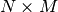, this is calculated as
\sum_{j=1}^{M} \sum_{i=1}^{N} \left(\mathbf{a_1}_{ij} - \mathbf{a_2}_{ij}\right)^2
Parameters: - array1 (input rank-2 array('d') with bounds (qp_n0,qp_n1)) –
- array2 (input rank-2 array('d') with bounds (qp_n2,qp_n3)) –
Returns: ret_rms_diff2 – float
Routine is wrapper around Fortran routine
rms_diff2defined in file src/libAtoms/linearalgebra.f95.
-
quippy.linearalgebra.rms_diff(vector1, vector2) For two vectors of
 dimensions, this is calculated as
dimensions, this is calculated as\sum_{i=1}^{N} \left(\mathbf{v_1}_i - \mathbf{v_2}_i\right)^2
Parameters: - vector1 (input rank-1 array('d') with bounds (qp_n0)) –
- vector2 (input rank-1 array('d') with bounds (qp_n1)) –
Returns: ret_rms_diff1 – float
Routine is wrapper around Fortran routine
rms_diff1defined in file src/libAtoms/linearalgebra.f95.
-
-
quippy.linearalgebra.trace_mult(*args, **kwargs)¶ Routine is wrapper around Fortran interface
trace_multcontaining multiple routines:-
quippy.linearalgebra.trace_mult(matrixa, matrixb) Parameters: - matrixa (input rank-2 array('d') with bounds (qp_n0,qp_n1)) –
- matrixb (input rank-2 array('d') with bounds (qp_n2,qp_n3)) –
Returns: ret_trm – float
Routine is wrapper around Fortran routine
matrix_trace_multdefined in file src/libAtoms/linearalgebra.f95.
-
-
quippy.linearalgebra.norm(*args, **kwargs)¶ Return the euclidean norm of a vector or of an array. For a single vector ‘x’, ‘norm(x)’ is equal to ‘sqrt(x .dot. x)’ A two-dimensional array is treated as a list of vectors in either Fortran (‘dir=1’) or C (‘dir=2’) style-ordering. The result is then a one-dimensional array of the norms of each vector.
Routine is wrapper around Fortran interface
normcontaining multiple routines:-
quippy.linearalgebra.norm(this, dir, n2) Parameters: - this (input rank-2 array('d') with bounds (qp_n0,qp_n1)) –
- dir (input int) –
- n2 (input int) – shape(qp_ret_sqvalue,0)
Returns: ret_sqvalue – rank-1 array(‘d’) with bounds (qp_n2)
Routine is wrapper around Fortran routine
array_normdefined in file src/libAtoms/linearalgebra.f95.
-
quippy.linearalgebra.norm(vector) Parameters: vector (input rank-1 array('d') with bounds (qp_n0)) – Returns: ret_norm – float Routine is wrapper around Fortran routine
vector_normdefined in file src/libAtoms/linearalgebra.f95.
-
-
quippy.linearalgebra.heap_sort(*args, **kwargs)¶ Routine is wrapper around Fortran interface
heap_sortcontaining multiple routines:-
quippy.linearalgebra.heap_sort(array[, r_data]) Sort an array of integers into ascending order. The function uses heapsort, which always scales as N log N. r_data is an accompanying array of reals on which the same reordering is performed (Initial implementation by Andreas Wonisch)
Parameters: - array (in/output rank-1 array('i') with bounds (qp_n0)) –
- r_data (in/output rank-1 array('d') with bounds (qp_n1), optional) –
Routine is wrapper around Fortran routine
heap_sort_idefined in file src/libAtoms/linearalgebra.f95.
-
quippy.linearalgebra.heap_sort(array[, i_data, r_data]) Parameters: - array (in/output rank-2 array('d') with bounds (qp_n0,qp_n1)) –
- i_data (in/output rank-1 array('i') with bounds (qp_n2), optional) –
- r_data (in/output rank-1 array('d') with bounds (qp_n3), optional) –
Routine is wrapper around Fortran routine
heap_sort_r_2dimdefined in file src/libAtoms/linearalgebra.f95.
-
quippy.linearalgebra.heap_sort(array[, i_data, r_data]) Sort an array of integers into ascending order. The function uses heapsort, which always scales as N log N. i_data and r_data are a accompanying arrays of integers and reals on which the same reordering is performed (Initial implementation by Andreas Wonisch)
Parameters: - array (in/output rank-1 array('d') with bounds (qp_n0)) –
- i_data (in/output rank-1 array('i') with bounds (qp_n1), optional) –
- r_data (in/output rank-1 array('d') with bounds (qp_n2), optional) –
Routine is wrapper around Fortran routine
heap_sort_rdefined in file src/libAtoms/linearalgebra.f95.
-
quippy.linearalgebra.heap_sort(array[, i_data, r_data]) Parameters: - array (in/output rank-2 array('i') with bounds (qp_n0,qp_n1)) –
- i_data (in/output rank-1 array('i') with bounds (qp_n2), optional) –
- r_data (in/output rank-1 array('d') with bounds (qp_n3), optional) –
Routine is wrapper around Fortran routine
heap_sort_i_2dimdefined in file src/libAtoms/linearalgebra.f95.
-
-
quippy.linearalgebra.d3coordination_function(*args, **kwargs)¶ Routine is wrapper around Fortran interface
d3coordination_functioncontaining multiple routines:-
quippy.linearalgebra.d3coordination_function(r, cutoff_in, transition_width) Parameters: - r (input float) –
- cutoff_in (input float) –
- transition_width (input float) –
Returns: ret_d3coordination_function_upper – float
Routine is wrapper around Fortran routine
d3coordination_function_upperdefined in file src/libAtoms/linearalgebra.f95.
-
-
quippy.linearalgebra.is_orthogonal(*args, **kwargs)¶ Test is matrix is unitary i.e. if $M M^{-1} = I$
Routine is wrapper around Fortran interface
is_orthogonalcontaining multiple routines:-
quippy.linearalgebra.is_orthogonal(matrix) Parameters: matrix (input rank-2 array('d') with bounds (qp_n0,qp_n1)) – Returns: ret_matrix_is_orthogonal – int Routine is wrapper around Fortran routine
matrix_is_orthogonaldefined in file src/libAtoms/linearalgebra.f95.
-
-
quippy.linearalgebra.check_size(*args, **kwargs)¶ Overloaded interface to assert that the size of an array is correct. If the test fails ‘system_abort’ is called with an appropriate error message constructed from the ‘arrayname’ and ‘caller’ arguments.
Routine is wrapper around Fortran interface
check_sizecontaining multiple routines:-
quippy.linearalgebra.check_size(arrayname, realarray, n, caller[, error]) Parameters: - arrayname (input string(len=-1)) –
- realarray (input rank-1 array('D') with bounds (qp_n0)) –
- n (input int) –
- caller (input string(len=-1)) –
- error (in/output rank-0 array(int,'i'), optional) –
Routine is wrapper around Fortran routine
check_size_complex_dim1_sdefined in file src/libAtoms/linearalgebra.f95.
-
quippy.linearalgebra.check_size(arrayname, intarray, n, caller[, error]) Parameters: - arrayname (input string(len=-1)) –
- intarray (input rank-1 array('i') with bounds (qp_n0)) –
- n (input rank-1 array('i') with bounds (n1)) –
- caller (input string(len=-1)) –
- error (in/output rank-0 array(int,'i'), optional) –
Routine is wrapper around Fortran routine
check_size_int_dim1defined in file src/libAtoms/linearalgebra.f95.
-
quippy.linearalgebra.check_size(arrayname, intarray, n, caller[, error]) Parameters: - arrayname (input string(len=-1)) –
- intarray (input rank-2 array('i') with bounds (qp_n0,qp_n1)) –
- n (input rank-1 array('i') with bounds (n2)) –
- caller (input string(len=-1)) –
- error (in/output rank-0 array(int,'i'), optional) –
Routine is wrapper around Fortran routine
check_size_int_dim2defined in file src/libAtoms/linearalgebra.f95.
-
quippy.linearalgebra.check_size(arrayname, logarray, n, caller[, error]) Parameters: - arrayname (input string(len=-1)) –
- logarray (input rank-1 array('i') with bounds (qp_n0)) –
- n (input int) –
- caller (input string(len=-1)) –
- error (in/output rank-0 array(int,'i'), optional) –
Routine is wrapper around Fortran routine
check_size_log_dim1_sdefined in file src/libAtoms/linearalgebra.f95.
-
quippy.linearalgebra.check_size(arrayname, realarray, n, caller[, error]) Parameters: - arrayname (input string(len=-1)) –
- realarray (input rank-1 array('d') with bounds (qp_n0)) –
- n (input rank-1 array('i') with bounds (n1)) –
- caller (input string(len=-1)) –
- error (in/output rank-0 array(int,'i'), optional) –
Routine is wrapper around Fortran routine
check_size_real_dim1defined in file src/libAtoms/linearalgebra.f95.
-
quippy.linearalgebra.check_size(arrayname, realarray, n, caller[, error]) Parameters: - arrayname (input string(len=-1)) –
- realarray (input rank-2 array('d') with bounds (qp_n0,qp_n1)) –
- n (input rank-1 array('i') with bounds (n2)) –
- caller (input string(len=-1)) –
- error (in/output rank-0 array(int,'i'), optional) –
Routine is wrapper around Fortran routine
check_size_real_dim2defined in file src/libAtoms/linearalgebra.f95.
-
quippy.linearalgebra.check_size(arrayname, intarray, n, caller[, error]) Parameters: - arrayname (input string(len=-1)) –
- intarray (input rank-1 array('i') with bounds (qp_n0)) –
- n (input int) –
- caller (input string(len=-1)) –
- error (in/output rank-0 array(int,'i'), optional) –
Routine is wrapper around Fortran routine
check_size_int_dim1_sdefined in file src/libAtoms/linearalgebra.f95.
-
quippy.linearalgebra.check_size(arrayname, realarray, n, caller[, error]) Parameters: - arrayname (input string(len=-1)) –
- realarray (input rank-1 array('D') with bounds (qp_n0)) –
- n (input rank-1 array('i') with bounds (n1)) –
- caller (input string(len=-1)) –
- error (in/output rank-0 array(int,'i'), optional) –
Routine is wrapper around Fortran routine
check_size_complex_dim1defined in file src/libAtoms/linearalgebra.f95.
-
quippy.linearalgebra.check_size(arrayname, realarray, n, caller[, error]) Parameters: - arrayname (input string(len=-1)) –
- realarray (input rank-2 array('D') with bounds (qp_n0,qp_n1)) –
- n (input rank-1 array('i') with bounds (n2)) –
- caller (input string(len=-1)) –
- error (in/output rank-0 array(int,'i'), optional) –
Routine is wrapper around Fortran routine
check_size_complex_dim2defined in file src/libAtoms/linearalgebra.f95.
-
quippy.linearalgebra.check_size(arrayname, realarray, n, caller[, error]) Parameters: - arrayname (input string(len=-1)) –
- realarray (input rank-1 array('d') with bounds (qp_n0)) –
- n (input int) –
- caller (input string(len=-1)) –
- error (in/output rank-0 array(int,'i'), optional) –
Routine is wrapper around Fortran routine
check_size_real_dim1_sdefined in file src/libAtoms/linearalgebra.f95.
-
quippy.linearalgebra.check_size(arrayname, logarray, n, caller[, error]) Parameters: - arrayname (input string(len=-1)) –
- logarray (input rank-2 array('i') with bounds (qp_n0,qp_n1)) –
- n (input rank-1 array('i') with bounds (n2)) –
- caller (input string(len=-1)) –
- error (in/output rank-0 array(int,'i'), optional) –
Routine is wrapper around Fortran routine
check_size_log_dim2defined in file src/libAtoms/linearalgebra.f95.
-
quippy.linearalgebra.check_size(arrayname, logarray, n, caller[, error]) Parameters: - arrayname (input string(len=-1)) –
- logarray (input rank-1 array('i') with bounds (qp_n0)) –
- n (input rank-1 array('i') with bounds (n1)) –
- caller (input string(len=-1)) –
- error (in/output rank-0 array(int,'i'), optional) –
Routine is wrapper around Fortran routine
check_size_log_dim1defined in file src/libAtoms/linearalgebra.f95.
-